Role: Design Team Lead
Collaborators: Della Tao
Together with my co-lead, we created designs and models to capture a rebranded identity for the HackDuke: Code for Good hackathon.
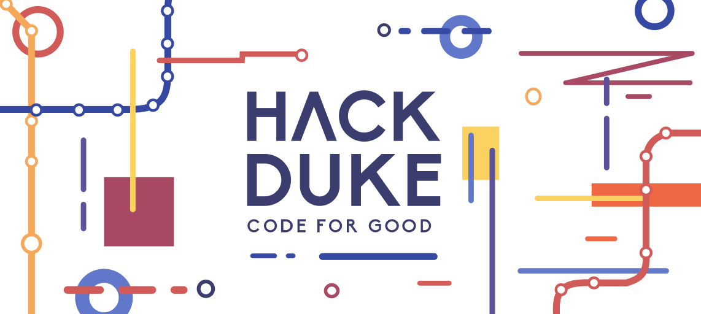Founded in 2012, HackDuke was the first collegiate hackathon to focus on creating solutions for social issues through technology.
We unite over 600 students, hackers, and mentors who are passionate about changing the intention and narrative behind how tech is used today to create meaningful hacks in a 24-hour sprint.
Students would create projects that solve problems in four predefined tracks: Inequality, Energy & Environment, Health & Wellness, and Education. We also had a mascot — a Russian Blue cat named HackKitty! Since then, HackDuke has grown so much in campus presence, starting the first conference in product design (IDEATE: A Design Thinking & Innovation Conference) as well as founding Catalyst– the first social & pre-professional tech-interest group.
As a community, we realized that we’ve seen a lot of growth from every “first” and step we’ve taken along the way. This year, we wanted to focus our rebrand on not only all the paths we’ve created, but also all the possibilities we see moving forward.
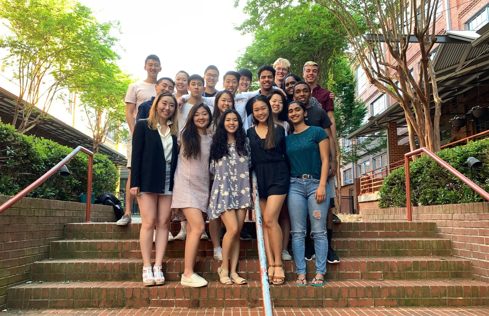We began our process by thinking about HackDuke’s mission and what we wanted participants to get out of attending our event. It’s always been centered around our Code for Good motto and I believe the key difference that sets our hackathon apart from others is our dedication to this mission. We try to keep this in mind when planning the logistics of the event, for example:
1. The prizes at HackDuke are amounts of money donated to a charity of the winner’s choice
2. Our meals are only catered from local vendors and we donate leftovers to nearby shelters
3. We enforce participants to work in one of the 4 unique project tracks, which enable members to partner with peers, local organizations, nonprofits and universities to work towards a cause that matters
4. We give out reusable water bottles to participants instead of buying disposable plastic bottled water
All of these small details are really just to improve participant experience and immerse them in an environment of thinking about what it means to use technology for social good. We want them to create impactful projects that explore ideas out of their comfort zone and that will extend beyond this weekend. Hackers shouldn’t just grow in technical ability over this weekend, but also should grow as an individual who contributes to their community.
Our rebrand centers around this idea of growth & exploration and our visual identity expresses this through travel.
While travel quite obviously shows exploration, it also allows us to show the sub-ideas of: taking different pathways, the universal impact of tech, and how social good differs globally. We brainstormed lots of different looks...
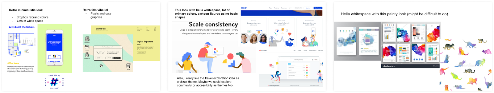 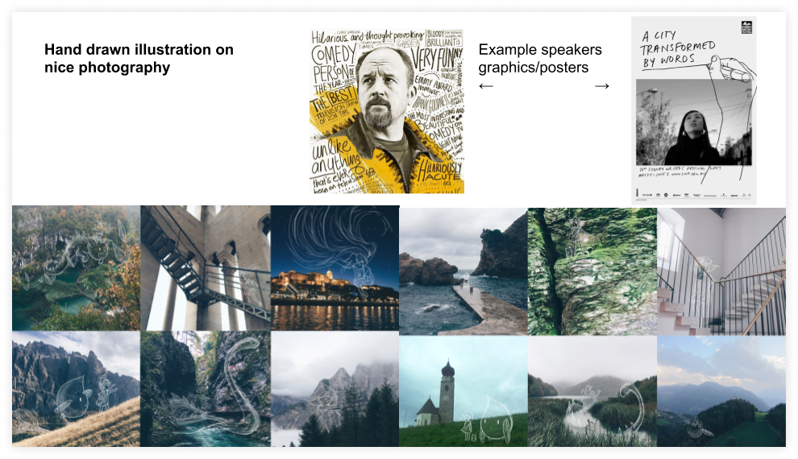...and ultimately settled on a heavy use of white space with pops of color in geometric shapes. The photography + white line illustrations was a strong contender, but we realized we didn’t have many original photographs to use and thus wouldn’t be able to build a solid design vocabulary with reusable assets.
Besides keeping the core branding like our logo and mascot consistent, we changed just about everything else. In order to create a unified presentation, we established some guides.
Color Palette
The color palette was inspired by the colors in the sky during sunrise and sunset with a good mix of warm and cool tones. Since these colors would be used against a white background, we focused more on making sure they look good as stand alone accent colors, but also in contrast with each other.

Fonts
This was probably the most disorganized aspect of our redesign process since we were all so indecisive and didn’t unify our font choice until way later. You can see the various fonts we were considering down below.
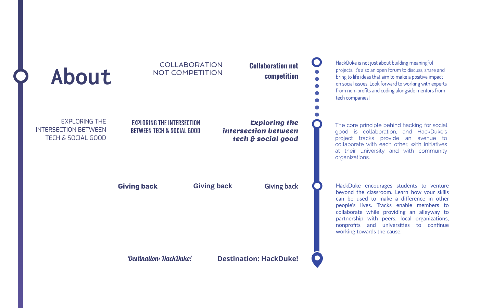In the end, we decided on Open Sans and Open Sans Bold for headings and larger text and PT Sans for body text.
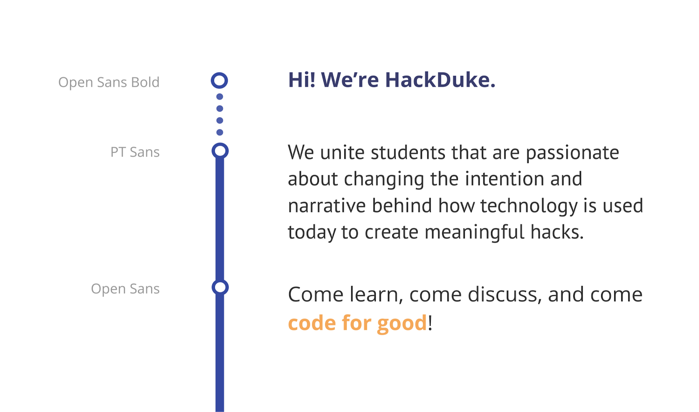Visual Assets
We decided to centralize on travel and transportation as a design motif. This was to represent exploration in a more literal sense and was a really fun theme for us to play around with.The two most important visual assets we used were the subway tracks and the assortment of colorful lines, circles, and squares.
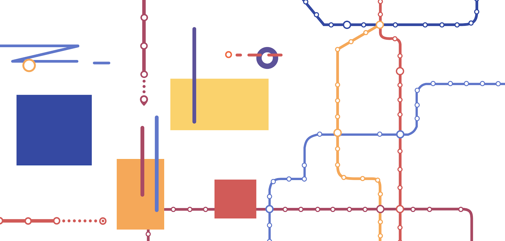Design vocabulary applied to our site landing page, icons, sponsorship documents, and flyers (post-card themed!)
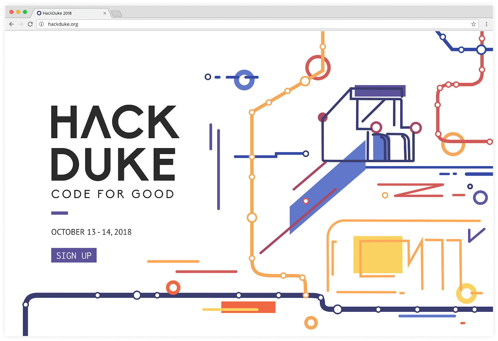 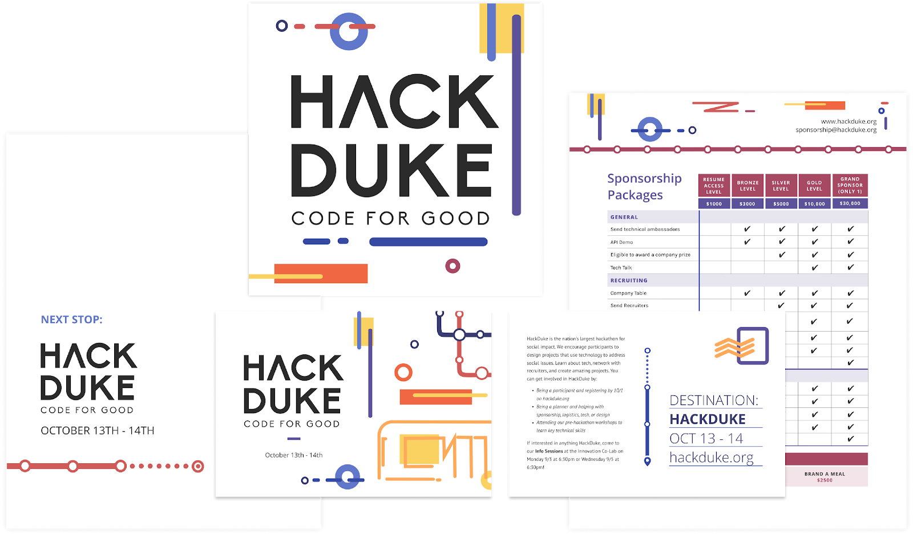Website Layout
The website was our first major project and we were tasked to complete a full redesign within 5 days over the summer in order to give the tech team enough time to code it before the school year started. For the most part, the layout would be conserved from last year and we were only changing the visual UI decisions.
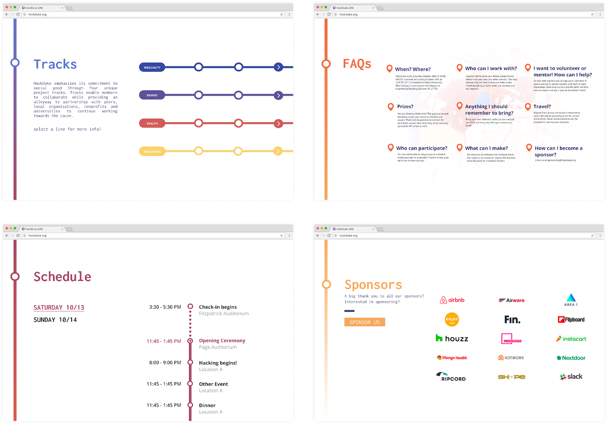We wanted to keep it a one page site, but also have a pathway going down the entire site to tie together the travel theme. One long subway track line was used to run down the left side of the page and each “stop” would be the title of the section on our site (About, Schedule, FAQs, etc…). We wanted to implement a non-continuous scroll to further give users the feeling of “arriving at the stop” when they scrolled through the site to a new section.
Stories
Another main change we wanted to undertake was to further the Tracks section and have the 4 track cards not just link to more information about them, but also to personal stories from our team members.
One of our directors was inspired by her experience in an undeveloped country this past summer, where she got to see how technology could create a driving force for social good. She wanted to make the hackathon more personal by having others share similar experiences related to the four tracks. We didn’t get to implement this section of the site, but it’s something to keep in mind for following years for sure. Here’s what it would’ve looked like when someone clicked into a track on the main page.
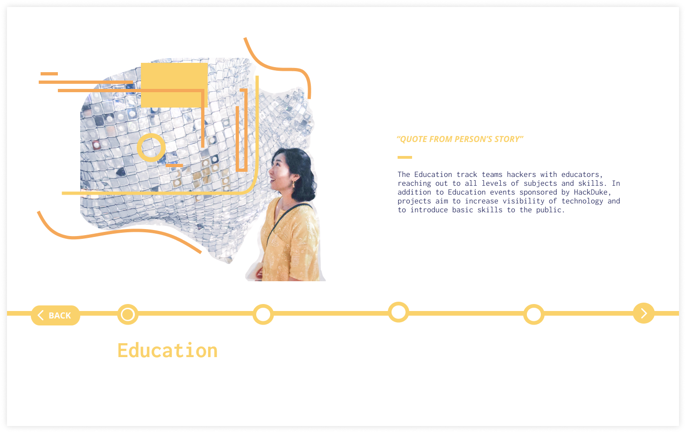Facebook Profile Videos
Photoshoooooot. We thought it’d be fun to wear clothes in our color palette. I’d never done animation, but a past design team member offered to give us a small workshop on Adobe AfterEffects!

Poster Campaign
Della and I really just wanted an excuse to use our lame travel puns.
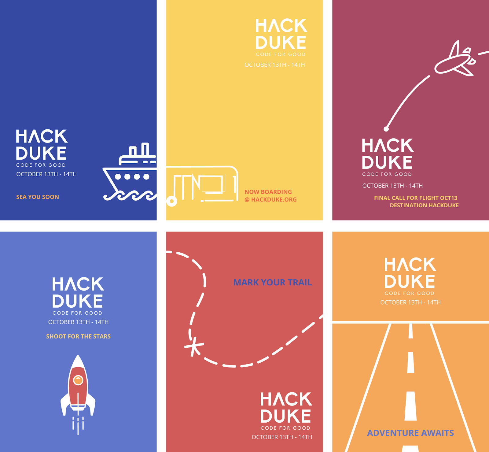HackKitty
Thought it’d be really cute if each of the 4 track kitties and the main kitty had a travel type associated with it. This part probably doesn’t need a whole heading dedicated to it, but they’re just so adorable.
Main kitty– astronaut; Health & Wellness– train conductor; Education– sailor; Inequality– flight attendant; Energy & Environment– pilot
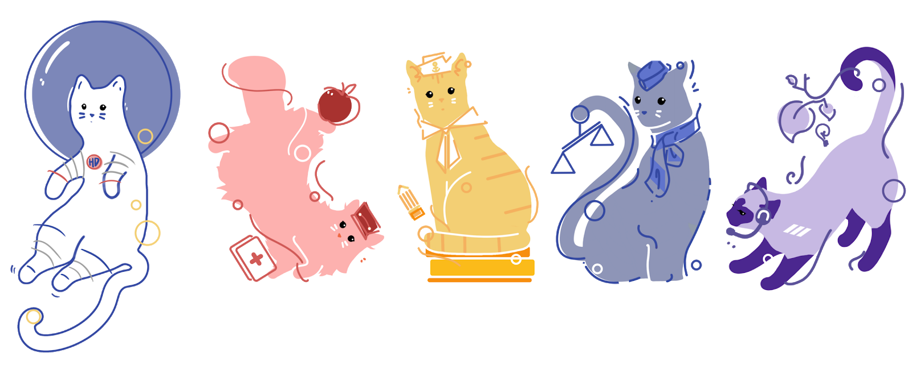Workshop Series
In 2014 HackDuke launched “From Scratch”, a week-long series of classes/crash-courses/workshops preceding the hackathon that taught students basic coding and design principles.
This year we decided to bring that back and held workshops that ranged from topics like learning React to tech recruiting tips! I used a slightly different visual style for this marketing, using a more doodle illustration-like feel, but still making sure to incorporate our main visual subway line & colorful shapes assets.
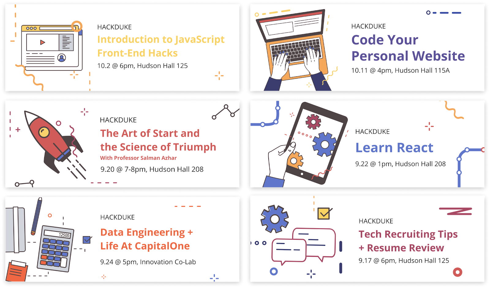We might’ve gone overboard with HackKitty as seen by the banner and organizer apparel designs. To go along with the travel theme, we thought it’d be cool to make the participant badges look like train tickets. These also doubled up as a punch card for us to keep track of who got their meal already. On the back, we put some important logistical information.
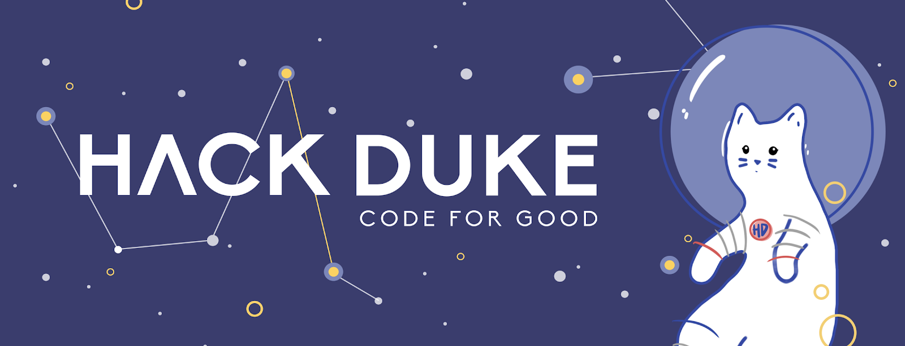 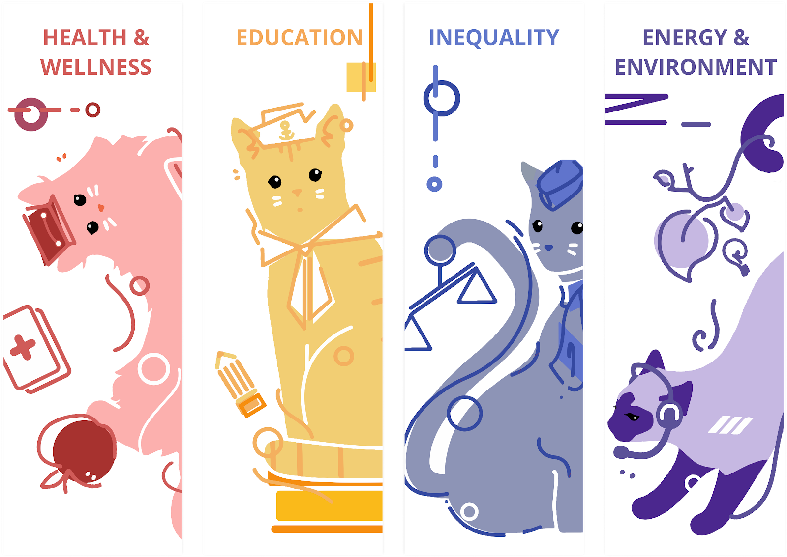 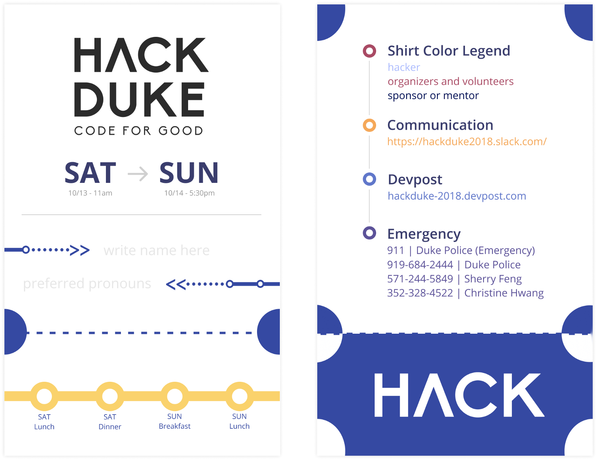
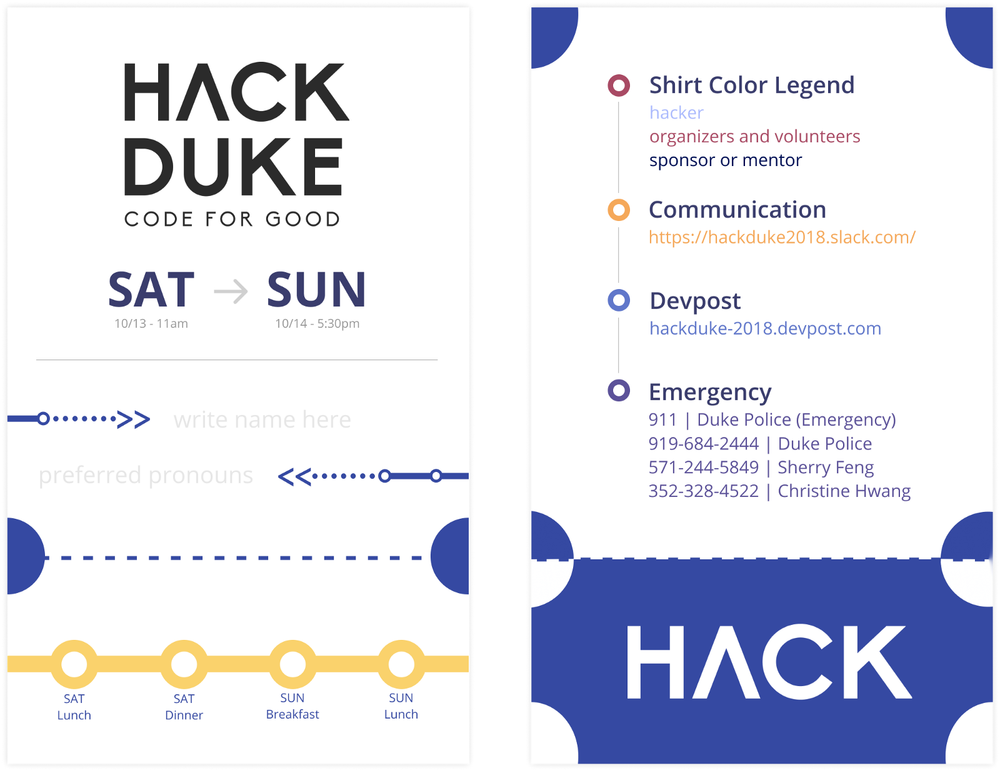